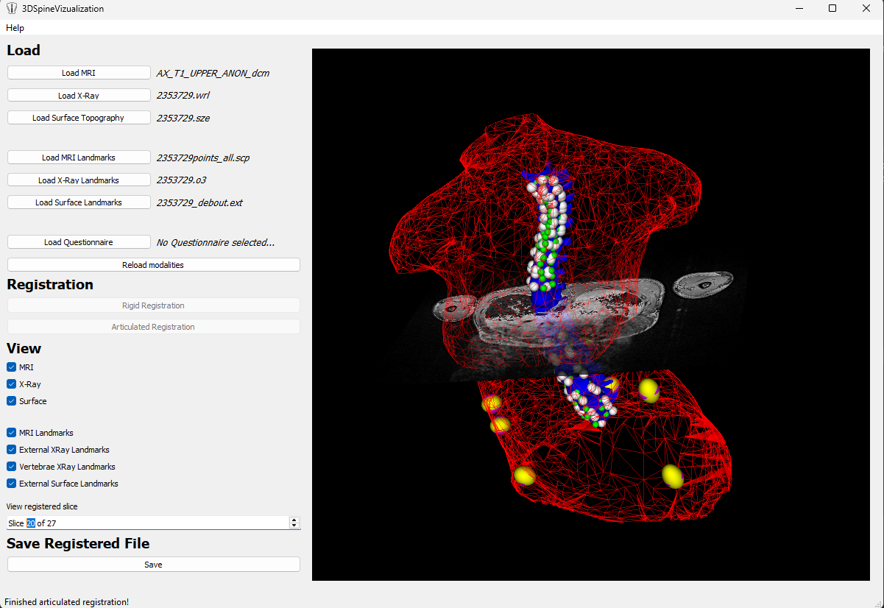
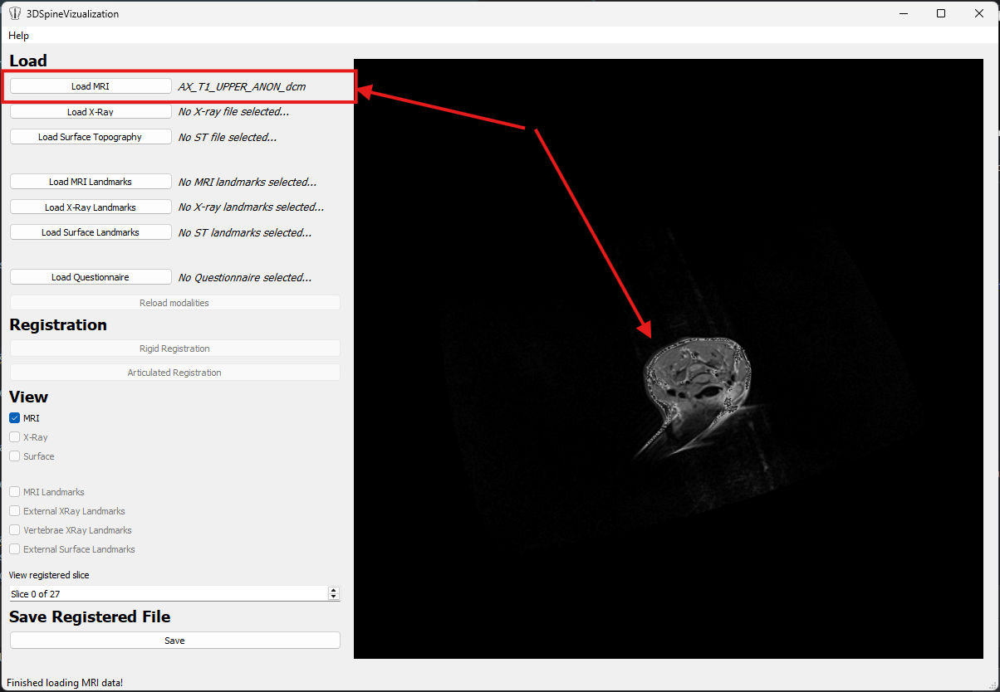
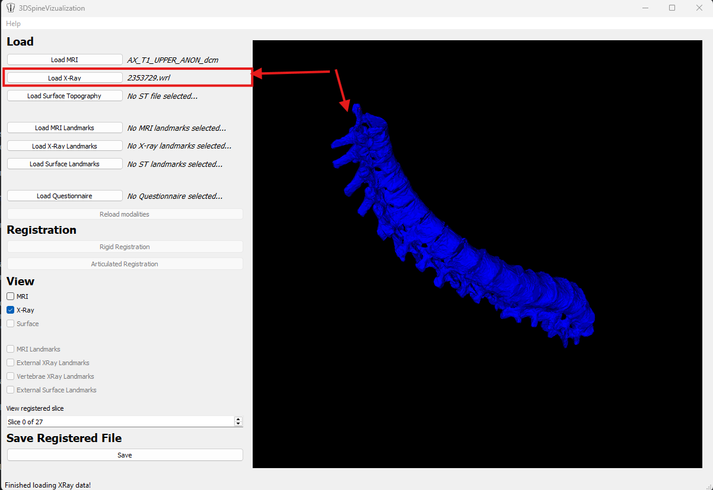
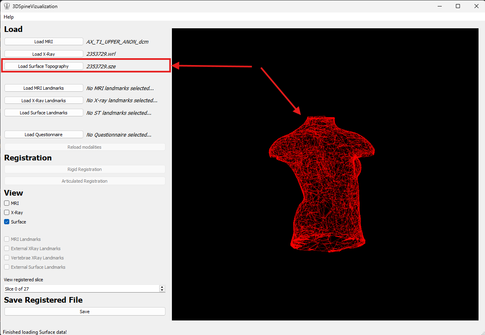
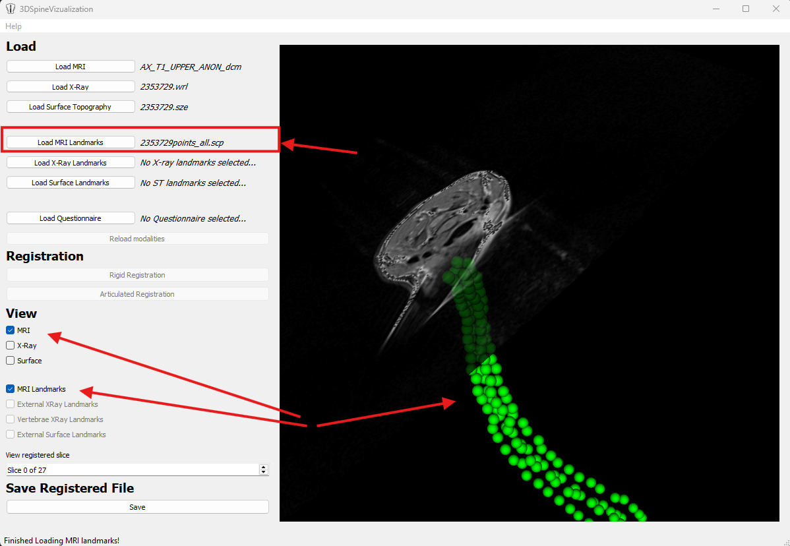
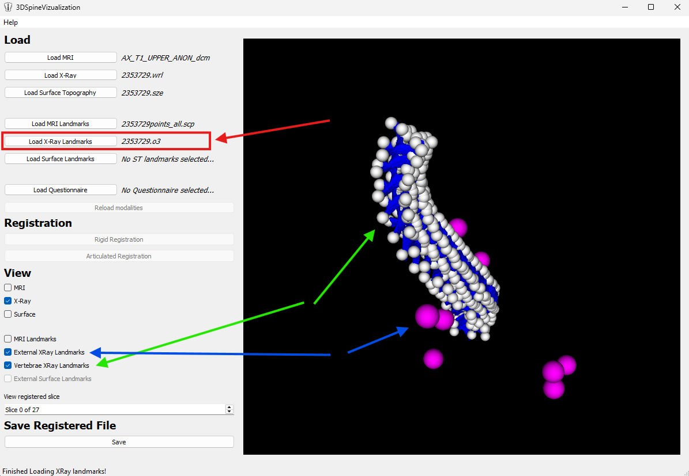
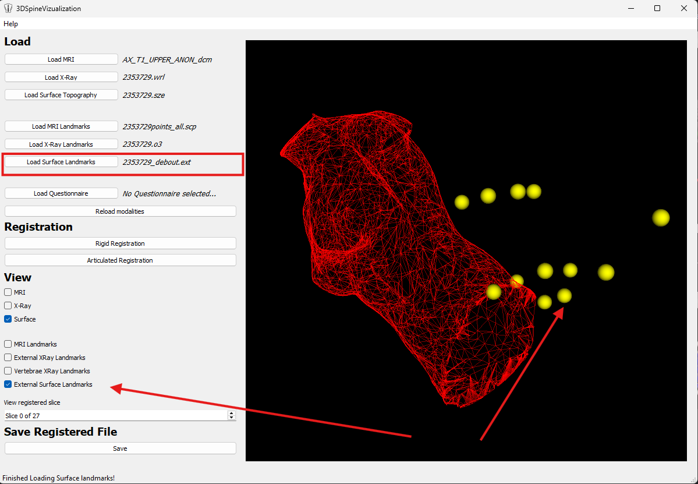
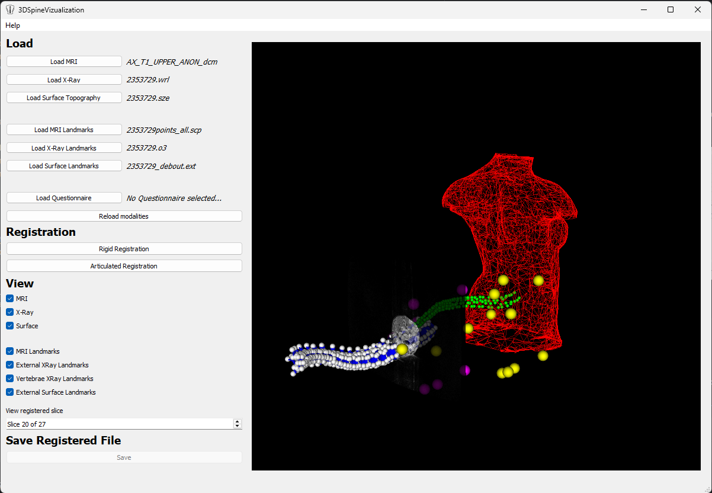
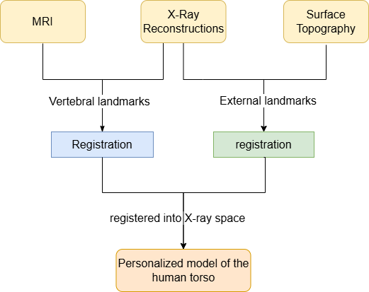

Navigating through MRI slices in the registered 3D model
By The-Luan Tran & Abdullah Sumbal
This is a PyQt5/VTK-based desktop application for visualizing and registering multimodal medical imaging data (MRI, X-Ray, and Surface Topography) to create comprehensive 3D models of the human torso for scoliosis surgical planning.

The Multimodal Image Fusion for the Reconstruction of a Human Torso software is a user-friendly tool for visualizing human torso using three modalities including X-Ray, MRI and surface topography. The application allows user to load and perform registration on the modalities. This application can assist researcher to develop surgical simulator for predicting surgery outcome of scoliosis patients.
python -m src.app.pyLoad MRI:

Load X-Ray:
.wrl file
Load Surface Topography:
.sze file
Load MRI Landmarks:
.scp file
Load X-Ray Landmarks:
.o3 file
Load Surface Topography Landmarks:
.ext file
|
 Before Registration
|
After Registration
|
registered.sze| Modality | Format | Extension | Description |
|---|---|---|---|
| X-Ray | VRML | .wrl |
3D spine reconstruction mesh |
| MRI | DICOM | .dcm, .ima |
Soft tissue slices (directory) |
| Surface Topography | Inspeck | .sze |
External torso surface mesh |
| X-Ray Landmarks | Custom | .o3 |
External & vertebral landmarks |
| MRI Landmarks | Custom | .scp |
Vertebral landmarks |
| Surface Landmarks | Custom | .ext |
External landmarks |
The application follows a Model-View-Controller (MVC) architecture:

Reload modalities button does not completely reset the modalities and is a feature to be implemented correctly later.
Supervisors: Prof. Frank Ferrie & Dr. Rola Harmouche
Affiliation: McGill University, Department of Electrical and Computer Engineering
MIT License - See project documentation for details.
Note: Registration algorithms and data reading processes are copyright of Dr. Rola Harmouche and École Polytechnique de Montréal.
Special thanks to Dr. Rola Harmouche for supervision, LIV4D lab at École Polytechnique Montreal for providing medical imaging data and documentation, and the Artificial Perception Lab at McGill for workspace.
If you use this software in your research, please cite:
Harmouche, R., Cheriet, F., Labelle, H., & Dansereau, J. (2013).
Multimodal image registration of the scoliotic torso for surgical planning.
BMC Medical Imaging, 13(1). https://doi.org/10.1186/1471-2342-13-1